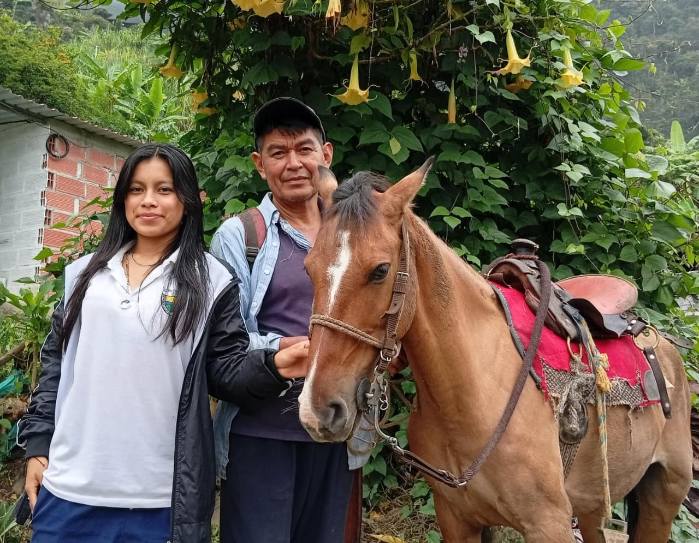
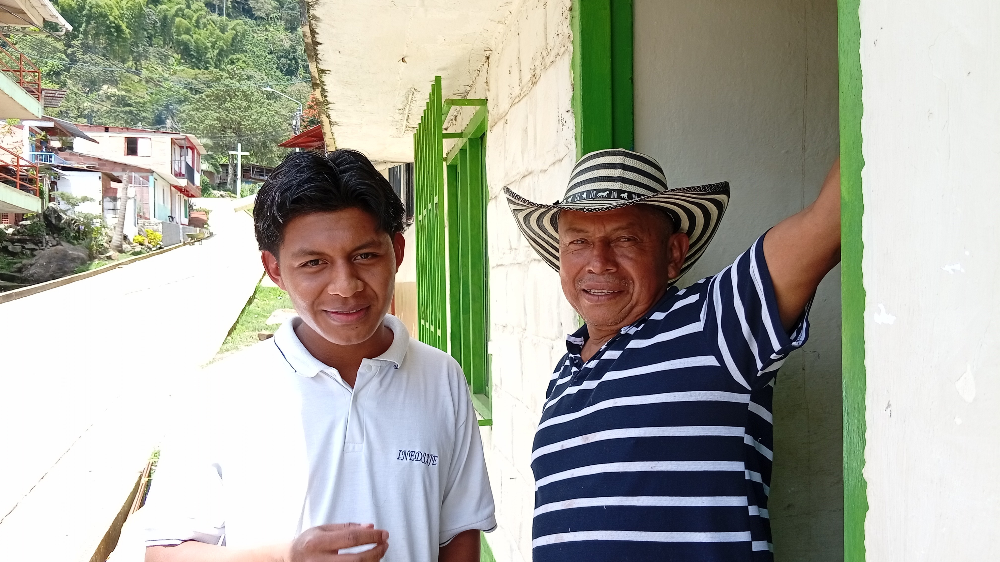

Los cultivos de nuestra tierra
El maíz, el fríjol y otros alimentos hacen parte de las costumbres y la alimentación de nuestras familias.
SAN LORENZO · RIOSUCIO, CALDAS
En nuestro territorio tenemos una gran riqueza: la tierra, los cultivos y los conocimientos de nuestros mayores. Antes, en nuestra comunidad abundaban productos como el fríjol y el maíz. Con el paso del tiempo, algunas de estas costumbres han cambiado y nuestra alimentación también. Con este proyecto queremos conocer, aprender y valorar las tradiciones alimentarias de nuestra comunidad, además de dar a conocer la importancia de consumir y cuidar los alimentos que se producen en nuestro propio territorio.
Conoce nuestro proyecto
🌱 Sembrando vida y conservando nuestras raíces
LO QUE NOS IDENTIFICA
A través de este trabajo conocimos un poco más sobre la alimentación de antes, los cultivos tradicionales y las experiencias de las personas de nuestro territorio. También tuvimos en cuenta las opiniones de habitantes de diferentes sectores, principalmente de la comunidad de San Jerónimo, donde realizamos las entrevistas y gran parte del proceso de nuestro proyecto.
El maíz, el fríjol y otros alimentos hacen parte de las costumbres y la alimentación de nuestras familias.
Sus experiencias nos enseñan cómo se trabajaba la tierra y cómo se conservaban las tradiciones.
Cada conversación y cada entrevista nos permitió conocer mejor nuestra historia y nuestras raíces.
UN CAMINO QUE NOS DEJA ENSEÑANZAS
Cada fotografía representa una parte de nuestro recorrido y de todo lo que aprendimos.

01 · NUESTRO CAMINO
Durante este año aprendimos a conocer mejor nuestro territorio y a valorar las riquezas que tenemos en San Lorenzo.

02 · NUESTRAS RAÍCES
Conocimos la importancia de nuestros cultivos, nuestras costumbres y los conocimientos que nuestros mayores han compartido con nosotros.

03 · UN AÑO PARA RECORDAR
Terminamos este año educativo con nuevos conocimientos, experiencias y recuerdos. Nos sentimos orgullosos de nuestras raíces y de nuestro trabajo.

04 · NUESTRA EXPERIENCIA
Cada momento compartido nos permitió aprender más sobre nuestra comunidad, nuestras tradiciones y nuestro territorio.
Este año fue una oportunidad para aprender, conocer nuestra historia y valorar lo que tenemos. Nos llevamos nuevos conocimientos y el orgullo de pertenecer a un territorio lleno de cultura, tradición y riqueza.
🌱 Nuestra tierra es parte de lo que somos.¡Un año para recordar!